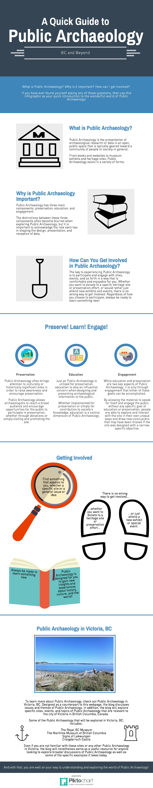
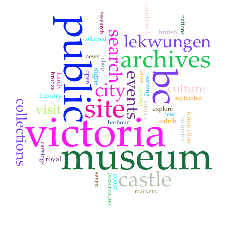
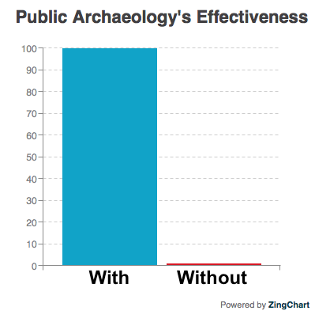

Visualisation
When considering Public Archaeology, and how increasingly digital it is becoming, visualisation is starting to play a key role in how research and data are understood and presented. Just as Public Archaeology takes a variety of forms for various purposes, there are also many ways in which visualisation can be implemented and incorporated into a new or existing project.
As an example of how visualisation can be applied to an existing project, the infographic below takes the information from the main page of "Public Archaeology" and presents it in a new way that incorporates more images, icons, and designs that may present the information in a more appealing, eye-catching, and streamlined way. 
So with essentially the same information, this quick guide presents the text in a much more visually appealing and engaging way through the infographic format.
Another example of using visualisation to take existing information and apply it in a new way is compiling data and presenting it in a way that can be read and understood quickly. Voyant, for instance, allows users to create images that take the most commonly occuring words in documents, websites, and so forth, and present the words in a visually appealing and easy-to-understand way. This image, for example, takes the top occuring words from the Public Archaeology site and the four webpages for the sites in Victoria (listed above and on the last page):

While this image is a fairly basic layout in Voyant, in nonetheless represents how visualisation can be used to take a lot of information and present it in a more comprehensible manner. Additionally, when looking at the image, one can note which words appear the most in across the various pages, and thus draw some conclusions regarding the themes and ideas that make-up much of Public Archaeology.
In addition to using visualisation to present information in a more appealing way and reinterpret data in order to reach conclusions quickly and effectively, visualisation tools can form the foundation for new information. For instance, the infographic below is not based on previously-presented data, but simply the attempt to create a visually appealing representation of a concept that is previously unwritten.
In short, visualisation is a useful tool within the realm of Public Archaeology. While these examples primarily focused on this site's themes of understanding Public Archaeology, visualisation can also be used in order to present information and data on specific research projects, heritage sites, and so forth.
All in all, the results of Public Archaeology's effectiveness WITH or WITHOUT visualisation is quite clear:
